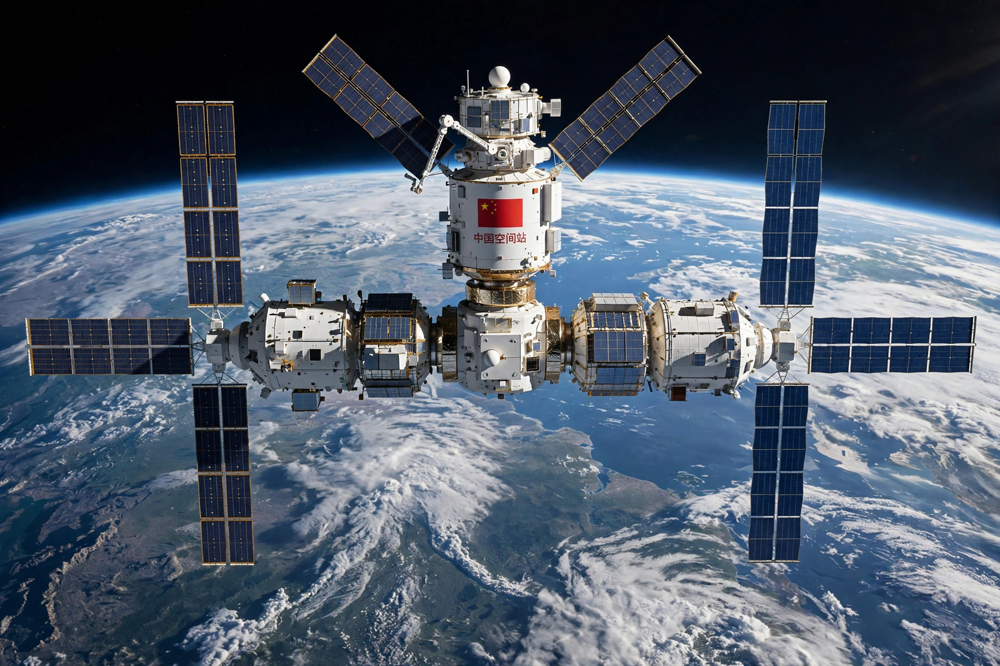

China Manned Space Agency
From Wikipedia, the free encyclopedia
| China Manned Space Agency | |
|---|---|
| Country | China |
| Programme | China Manned Space Program (Project 921) |
| Known for | Shenzhou, Tiangong space station |
| Launch site | Jiuquan Satellite Launch Center |

Tiangong, CMSA's station, completed in 2022.The China Manned Space Agency (CMSA) is the agency of the People's Republic of China responsible for human spaceflight, administering the China Manned Space Program — approved in 1992 as Project 921 — which produced the Shenzhou spacecraft, the Tiangong space stations, and plans for a crewed lunar landing before 2030.
China built its crewed programme largely independently — it is excluded from the International Space Station partnership — developing its own spacecraft, launch vehicles (the human-rated Long March 2F), spacesuits and the Jiuquan launch centre in the Gobi Desert, from which all crewed missions depart.
Three-step strategy
The programme followed a declared three-step path: crewed flight (achieved 2003), space laboratories and rendezvous (Tiangong-1 and -2, 2011–2019), and a permanent modular station — the Tiangong space station, assembled in orbit in 2021–2022 and continuously occupied since. CMSA publishes mission emblems and crew announcements shortly before flights, a more reserved style than NASA's, and has signed cooperation agreements with other agencies and the UN for experiments and future crew exchanges aboard Tiangong.
The next step is lunar: new Long March 10 rockets, the Mengzhou crew vehicle and the Lanyue lander are in development for a crewed Moon landing targeted before 2030.
See also
Shenzhou (spacecraft) · Tiangong space station · Zhai Zhigang · International Space Station